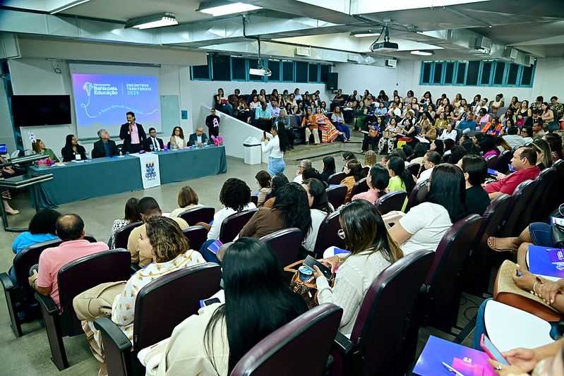

Nossas açõesnossas formações · encontros
Encontros territoriais
Os Encontros Territoriais do Movimento Bahia pela Educação foram realizados em sete municípios baianos ao longo de 2026 e reuniram representantes de mais da metade dos municípios do estado.
Ao todo, foram certificados 1.156 profissionais, entre secretários municipais de educação, coordenadores pedagógicos, gestores escolares, formadores, articuladores e técnicos educacionais.
A programação contou com palestras e debates sobre alfabetização na idade certa, letramento matemático, financiamento educacional e boas práticas na gestão da educação pública.
Entre os palestrantes estiveram referências nacionais da área educacional, como Mozart Neves Ramos, Maria Helena Guimarães de Castro, Kátia Smole, Leomar da Silva, Cristiane Chica, Silvia Regina Longato e Cenilza Pereira.
A expressiva participação dos municípios baianos evidencia o fortalecimento do compromisso coletivo com a melhoria da educação e reforça o papel do Movimento como espaço de cooperação, articulação e disseminação de políticas voltadas à garantia do direito de aprender.
Os sete encontros
Ordene por data, município ou participantes. Os álbuns de fotos, publicados no Flickr do Sistema FIEB, abrem nesta página.
| Foto | Local | Álbum de fotos | |||
|---|---|---|---|---|---|
| Foto a selecionar no álbum | Juazeiro | 10/03 de 2026 | auditório da Universidade do Estado da Bahia (UNEB) | 171 participantes | Ver álbum de fotos |
| Foto a selecionar no álbum | Ilhéus | 31/03 de 2026 | auditório do Hotel Aldeia da Praia | 157 participantes | Ver álbum de fotos |
 | Feira de Santana | 14/04 de 2026 | Anfiteatro da Universidade Estadual de Feira de Santana (UEFS) | 242 participantes | Ver álbum de fotos |
| Foto a selecionar no álbum | Vitória da Conquista | 28/04 de 2026 | Centro de Cultura Camillo de Jesus Lima | 211 participantes | Ver álbum de fotos |
| Foto a selecionar no álbum | Barreiras | 12/05 de 2026 | auditório da Universidade do Estado da Bahia (UNEB) | 125 participantes | Ver álbum de fotos |
| Foto a selecionar no álbum | Eunápolis | 26/05 de 2026 | Complexo Integrado de Educação Básica, Tecnológica e Profissional de Eunápolis (CIEBTEC) | 120 participantes | Ver álbum de fotos |
| Foto a selecionar no álbum | Salvador | 09/06 de 2026 | auditório da Federação das Indústrias do Estado da Bahia (FIEB) | 130 participantes | Ver álbum de fotos |